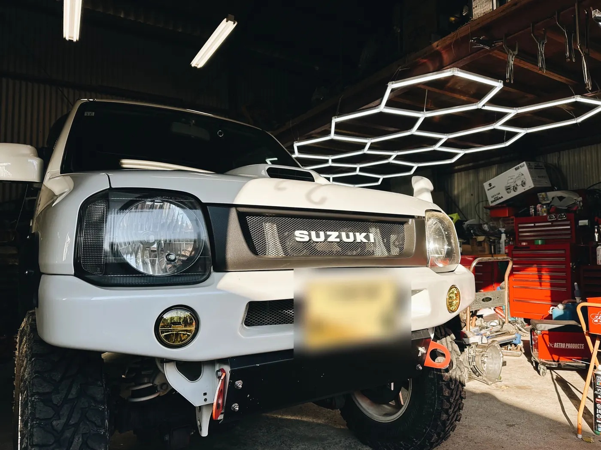

WORK 05
JB23 前後ラテラルロッドブラケット補強
/ 作業事例
補強記録 // JB23

大阪府からお越しいただいたJB23ジムニーの、前後ラテラルロッドブラケットの補強です。
ラテラルロッドは車軸の左右の位置を決めている部品で、そのブラケットには足回りが動くたびに大きな力がかかります。 リフトアップ車や大径タイヤ、調整式ラテラルロッドを使っている車は負担がさらに大きくなるので、早めに補強しておきたい部分です。
前後のブラケットに補強プレートを溶接し、仕上げに塗装をして錆を防いでいます。
- ブラケットまわり・フレームの状態確認
- 前後のブラケットに補強プレートを溶接
- 防錆のための塗装で仕上げ
- 組み付け・最終確認
Nova_83LAB にご依頼いただいた方へ。よろしければ Googleのクチコミ で感想をお聞かせください。